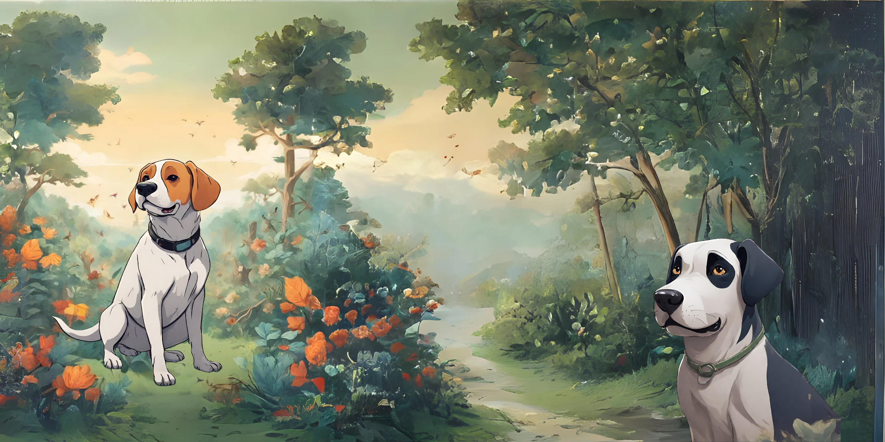
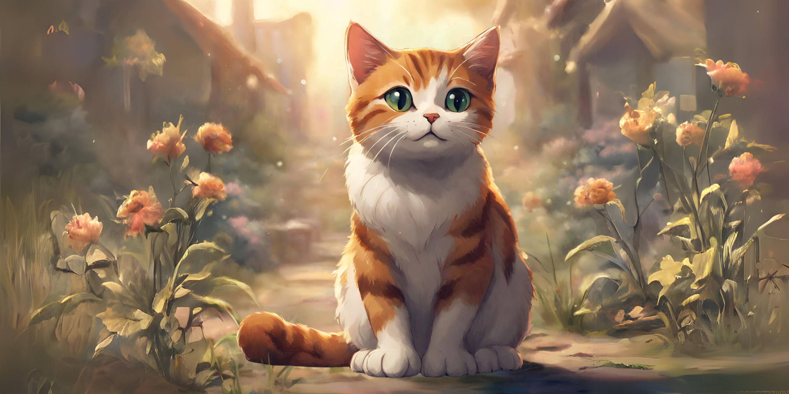
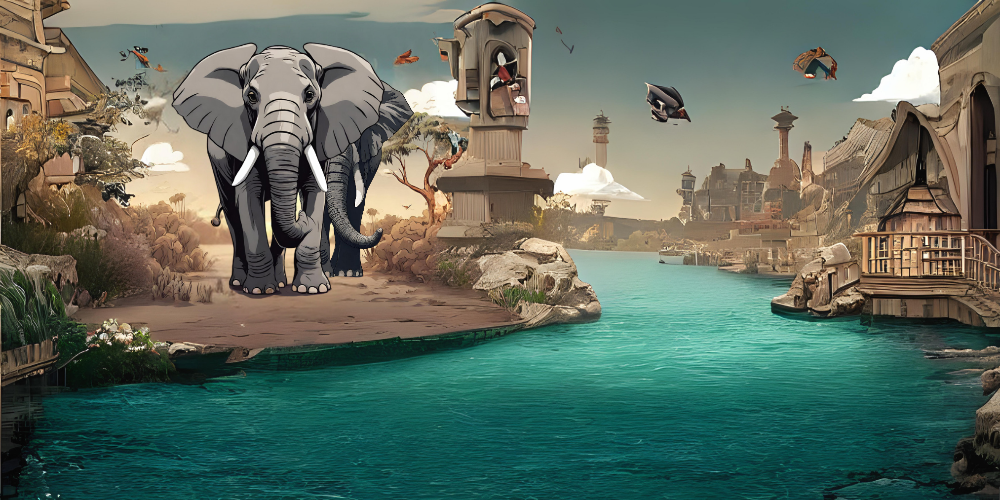
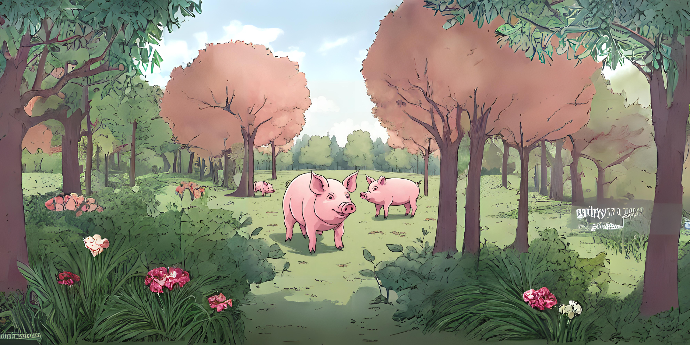
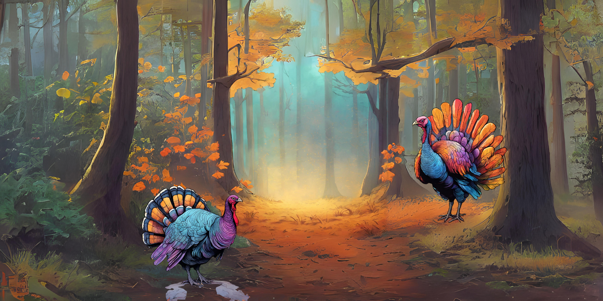

Anjing
Anjing menjadi salah satu hewan atau binatang cerdas lantaran bisa mengingat 200 kosakata. Namun, level kepintaran anjing juga bisa dilihat dari jenis ras anjing tersebut.
credit : www.liputan6.comKucing
Kucing merupakan hewan peliharaan yang paling diminati dan populer di Indonesia. Hewan menggemaskan tersebut membuat hati para pecinta hewan ingin memeliharanya. Kucing memiliki indera penciuman dan kemampuan melompat yang luar biasa.
credit : www.liputan6.comGajah
Belalai gajah adalah organ yang sangat serbaguna. Mereka menggunakannya untuk makan, minum, mencuci tubuh, mengangkat benda-benda berat, dan bahkan berkomunikasi dengan sesama gajah.
credit : www.liputan6.comBabi
Masa kehamilan babi adalah 114 hari atau mudahnya 3 bulan, 3 minggu, dan 3 hari. Seekor babi bisa melahirkan 8 hingga 13 anak babi sekaligus. Induk babi bisa melahirkan dua kali dalam setahun.
credit : www.liputan6.comBurung Beo

Rata-rata usia hidup Burung Beo sekitar 20-30 tahun. Namun ada spesies Burung Beo tertentu dapat hidup lebih dari 80 tahun meski tidak umum
credit : www.liputan6.comKalkun
Kalkun dapat bertelur 10-12 biji dalam sekali musim kawin. Telur-telur ini keluar satu per satu setiap harinya dalam periode hampir 2 minggu. Setelah itu telur akan menetas setelah berumur 28 hari.
credit : www.liputan6.com